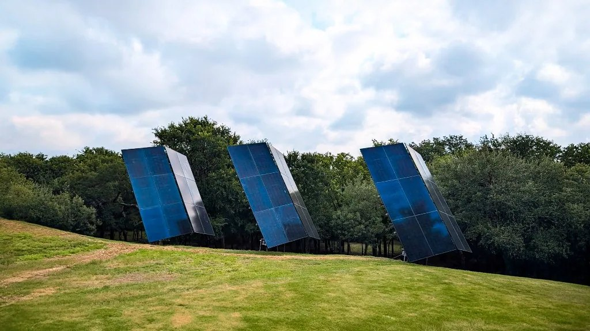

Hospitality
olldae →Inventory, recipe costing and catering quoting across independent venues.
The object layer for the business you already run.
Records scattered across payments, ledgers and documents are resolved into single objects — each carrying the date it was true, the date we learned it, and a trail back to the system it came from. Every workflow above it operates on the object, not the spreadsheet.
Five properties that are enforced in the write path rather than promised in a deck. Each one is the reason a figure downstream can be trusted.
A payments customer, a vendor id and a string in an email signature are three records and one company. Questions are asked about the object, never about whichever string a source happened to use.
Every property knows when it was valid in the world and when it was observed. Judging an August decision with September knowledge is look-ahead bias, and the two timelines are kept separate so it cannot happen quietly.
Writing a value requires its source system and source reference. The trail prints for any figure. A number with no trail is not reportable — mechanically, not as a matter of care.
Actions are classified by blast radius. Only the reversible class runs unattended; anything touching money, outbound communication or a legal document waits for a person.
Work closes on a value read back out of the system that was supposed to change. An HTTP 200 is not evidence that anything happened.
The ontology is only as wide as the systems connected to it. These are the ones running in production today.
Inventory, recipe costing and catering quoting across independent venues.
Live transaction feeds and accounting sync across separate operating companies.
Line-item invoicing, reminders and collect-on-send payment flows.
800+ messages a week triaged, routed and deduplicated against the calendar.
Deployed
